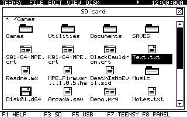
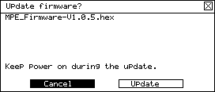

Try the scroll arrows, drag the thumb, select a filename, or close a window. Every screen uses the same frames, close buttons, type, and focus treatment.
Design preview only.No files or firmware are changed.
These images come from executing the native drawing routines with sample files. They show the implemented browser and firmware dialog; physical hardware testing is separate.

